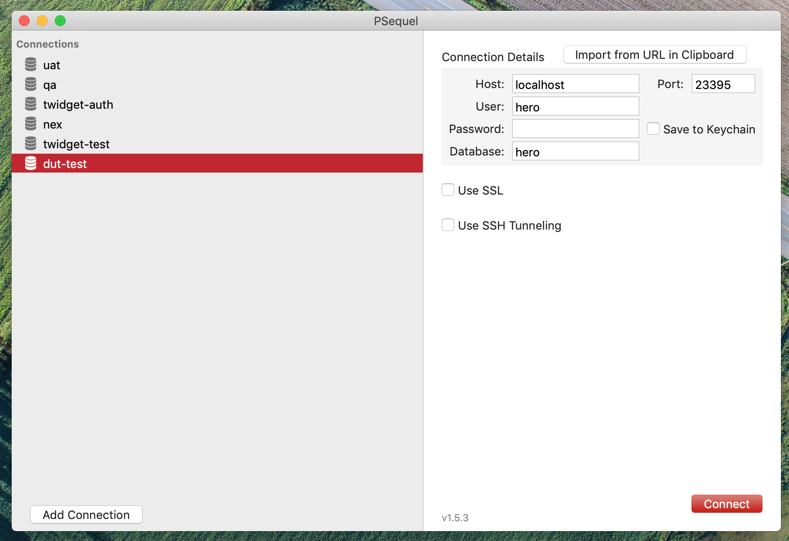
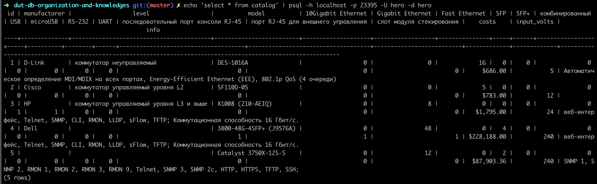

Онлайн версия доступна по ссылке
INSERT INTO ports(id, name)
VALUES
(1, '10Gigabit Ethernet'),
(2, 'Gigabit Ethernet'),
(3, 'Fast Ethernet'),
(4, 'SFP+'),
(5, 'SFP'),
(6, 'комбинированный'),
(7, 'USB'),
(8, 'microUSB'),
(9, 'RS-232'),
(10, 'UART'),
(11, 'последовательный порт консоли RJ-45'),
(12, 'порт RJ-45 для внешнего управления'),
(13, 'слот модуля стекирования');
INSERT INTO levels(id, name)
VALUES
(1, 'коммутатор неуправляемый'),
(2, 'коммутатор управляемый уровня L2'),
(3, 'коммутатор управляемый уровня L3 и выше');
INSERT INTO manufactorers(id, name)
VALUES
(1, 'D-Link'),
(2, 'Cisco'),
(3, 'HP'),
(4, 'Dell');
INSERT INTO switches(id, name, manufactorer_id, level_id, costs, input_volts, info)
VALUES
(1, 'DES-1016A', 1, 1, 686, 5, 'Автоматическое определение MDI/MDIX на всех портах, Energy-Efficient Ethernet (EEE), 802.1p QoS (4 очереди)'),
(2, 'SF110D-05', 2, 1, 783, 12, ''),
(3, 'X1008 (210-AEIQ)', 4, 2, 1795, 24, 'веб-интерфейс, Telnet, SNMP, CLI, RMON, LLDP, sFlow, TFTP; Коммутационная способность 16 Гбит/с.'),
(4, '3800-48G-4SFP+ (J9576A)', 3, 3, 228188.00, 240, 'веб-интерфейс, Telnet, SNMP, CLI, RMON, LLDP, sFlow, TFTP; Коммутационная способность 16 Гбит/с.'),
(5, 'Catalyst 3750X-12S-S', 2, 3, 87903.36, 240, 'SNMP 1, SNMP 2, RMON 1, RMON 2, RMON 3, RMON 9, Telnet, SNMP 3, SNMP 2c, HTTP, HTTPS, TFTP, SSH; ');
INSERT INTO switches_ports(switch_id, port_id)
VALUES
(1, 3), (1, 3), (1, 3), (1, 3), (1, 3), (1, 3), (1, 3), (1, 3), (1, 3), (1, 3), (1, 3), (1, 3), (1, 3), (1, 3), (1, 3), (1, 3),
(2, 3), (2, 3), (2, 3), (2, 3), (2, 3),
(3, 2), (3, 2), (3, 2), (3, 2), (3, 2), (3, 2), (3, 2), (3, 2), (3, 7), (3, 8),
(4, 11), (4, 12), (4, 13), (4, 4), (4, 4), (4, 4), (4, 4), (4, 2), (4, 2), (4, 2), (4, 2), (4, 2), (4, 2), (4, 2), (4, 2), (4, 2), (4, 2), (4, 2), (4, 2), (4, 2), (4, 2), (4, 2), (4, 2), (4, 2), (4, 2), (4, 2), (4, 2), (4, 2), (4, 2), (4, 2), (4, 2), (4, 2), (4, 2), (4, 2), (4, 2), (4, 2), (4, 2), (4, 2), (4, 2), (4, 2), (4, 2), (4, 2), (4, 2), (4, 2), (4, 2), (4, 2), (4, 2), (4, 2), (4, 2), (4, 2), (4, 2), (4, 2), (4, 2), (4, 2), (4, 2),
(5, 4), (5, 5), (5, 2), (5, 2), (5, 2), (5, 2), (5, 2), (5, 2), (5, 2), (5, 2), (5, 2), (5, 2), (5, 2), (5, 2);
docker образ БД построен таким образом, что при первом запуске он выполняет последовательно все *.sql и *.sh файлы из каталога скриптов. По этому, чтобы применить миграции необходимо перезапустить контейнер с принудительной пересборкой.
docker-compose up --build
Теперь необходимо убедиться, что таблицы были созданы в БД. Выполним команду
echo '\dt public.*' | psql -h localhost -p 23395 -U hero -d hero;
В результате postgreSQL-специфичный запрос
\dt public.*;
будет перенаправлен через stdin в программу psql, которая подключится с параметрами
-h localhost -p 23395 -U library -d library
к БД, выполнит запрос, завершится и вернет результат


Выполним команду echo 'select * from catalog' | psql -h localhost -p 23395 -U hero -d hero

Видим, что миграция сработала и данные присутствуют в таблице каталоге